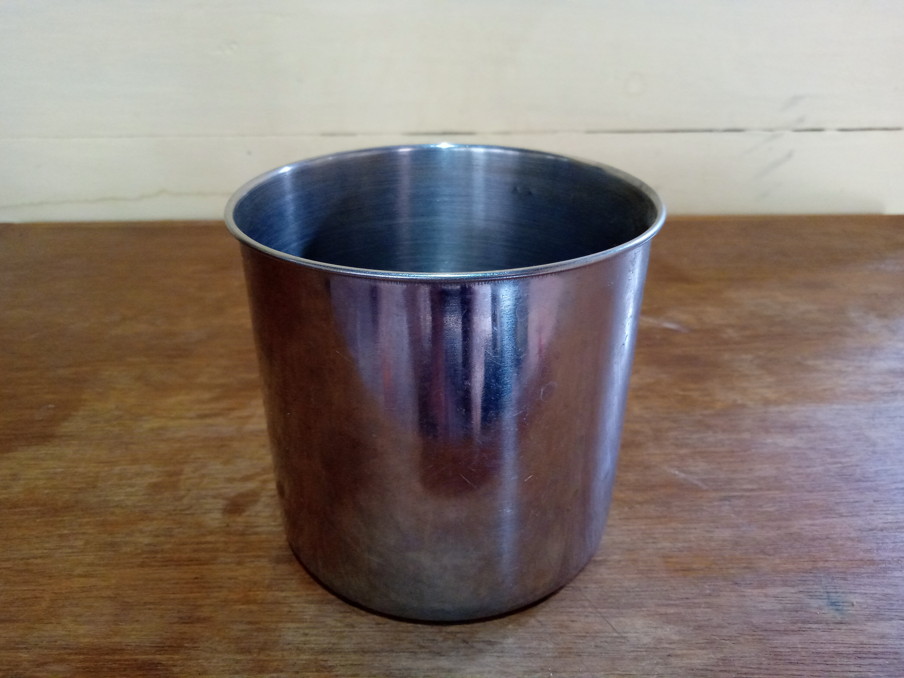
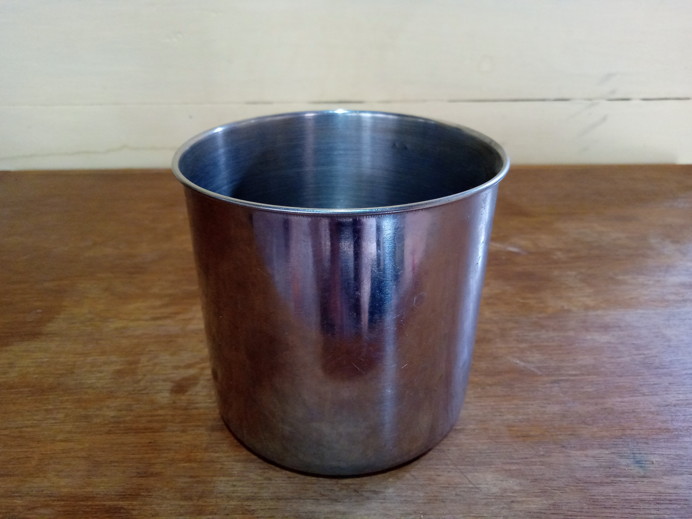

Klasifikasi Materi dan Perubahannya

Klasifikasi materi
Pertanyaan
- Jawablah pertanyaan berikut ini!
- Pertanyaan ini terdiri dari 5 soal
- Setiap pertanyaan memiliki data yang disajikan
- Anda diminta memilih jawaban yang benar diantara pilihan jawaban
- Jika jawaban anda benar, maka kotak pilihan akan berubah warna hijau dan akan tampil pembahasan
- Jika jawaban anda salah, maka kotak pilihan akan berubah warna merah lalu akan tampil tombol 'Ulang'
- Jika ingin mengulang menjawab pertanyaan, silahkan tekan tombol 'Ulang'
- Jika ingin melanjutkan menjawab pertanyaan, silahkan tekan tombol 'Selanjutnya' pada nomor soal
- Jika ingin kembali ke pertanyaan sebelumnya, silahkan tekan tombol 'Sebelumnya' pada nomor soal
- Di bawah ini yang menjadi karakteristik dari materi yang tergolong unsur adalah ...
(Silahkan pilih 2 pilihan)
Pembahasan:
Materi yang tergolong unsur memiliki karakteristik diantaranya, merupakan zat tunggal yang sukar untuk diuraikan dan dapat mempertahankan sifat yang dimilikinya.
Pembahasan:
Silahkan pilih kembali jawaban yang benar
- Di bawah ini yang menjadi karakteristik dari materi yang tergolong senyawa adalah ...
(Silahkan pilih 2 pilihan)
Pembahasan:
Materi yang tergolong senyawa memiliki karakteristik diantaranya, terbentuk dari dua unsur atau lebih yang berbeda dan dapat diuraikan menggunakan reaksi kimia.
Pembahasan:
Silahkan pilih kembali jawaban yang benar
- Perhatikan gambar di bawah ini!
 
(Minyak goreng) (Awan) (Larutan kecap) (Kaleng)
Berdasarkan gambar di atas, materi yang tergolong ke dalam campuran adalah ...
- Minyak goreng dan awan
- Larutan kecap dan kaleng
- Awan dan larutan kecap
- Kaleng dan minyak goreng
Pembahasan:
Pada gambar di atas, benda atau materi yang tergolong campuran adalah awan dan larutan kecap. Larutan kecap terdiri dari senyawa air dan kecap dan awan terdiri dari unsur-unsur gas dan partikel senyawa air.
Pembahasan:
Campuran dibedakan menjadi tiga yaitu, campuran yang tersusun atas zat gas dan zat gas, campuran yang tersusun atas zat padat dan zat padat, dan campuran yang tersusun atas zat padat dan cair.
- Perhatikan hasil identifikasi sifat larutan menggunakan indikator alami ekstrak bunga mawar!
(Larutan A) (Larutan B)
Ketika larutan A dan larutan B dicampurkan dengan ekstrak bunga mawar, terjadi perubahan warna pada kedua larutan yaitu larutan A menjadi warna merah dan larutan B menjadi warna hijau. Berdasarkan perubahan warna yang terjadi pada kedua larutan, sifat dari larutan A dan larutan B adalah ...
- Asam dan basa
- Basa dan basa
- Asam dan garam
- Asam dan asam
Pembahasan:
Pada gambar di atas, perubahan warna yang terjadi yaitu, larutan A berubah warna menjadi warna merah muda dan larutan B berubah warna menjadi warna hijau kekuningan.
Dari perubahan warna tersebut dapat identifikasi sifat dari larutan tersebut yaitu larutan A bersifat asam dan larutan B bersifat basa.
Pembahasan:
Pada gambar di atas, perubahan warna yang terjadi yaitu, larutan A berubah warna menjadi warna merah muda dan larutan B berubah warna menjadi warna hijau kekuningan.
Dari perubahan warna tersebut dapat identifikasi sifat dari larutan adalah ...
- Perhatikan gambar yang ada di bawah ini!
(Larutan X) (Larutan Y)
Ketika kertas lakmus merah dan biru dicelupkan ke dalam larutan X, kertas lakmus merah berubah warna menjadi warna biru dan ketika kertas lakmus merah dan biru dicelupkan ke dalam larutan Y, kertas lakmus tidak terjadi perubahan warna. Berdasarkan perubahan warna yang terjadi pada kedua percobaan di atas, sifat dari larutan X dan larutan Y adalah ...
- Asam dan basa
- Basa dan garam
- Garam dan asam
- Semua salah
Pembahasan:
Pada gambar diatas, terjadi perubahan warna pada larutan X yaitu kertas lakmus merah yaitu berubah warna menjadi biru dan pada larutan Y tidak terjadi perubahan warna pada kertas lakmus merah dan kertas lakmus biru. ini menunjukkan sifat dari larutan X adalah basa dan sifat dari larutan Y adalah garam.
Pembahasan:
Pada gambar diatas, terjadi perubahan warna pada larutan X yaitu kertas lakmus merah yaitu berubah warna menjadi biru dan pada larutan Y tidak terjadi perubahan warna pada kertas lakmus merah dan kertas lakmus biru. ini menunjukkan sifat dari larutan X dan larutan Y